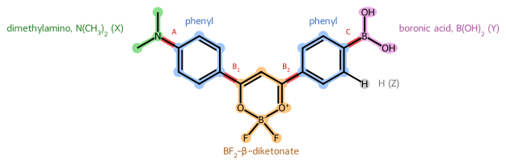

Dimethylamino chelate in acetonitrile
Giovanni Gravili ![]()
The dimethylamino chelate \mathbf{3} in acetonitrile, the TICT candidate: whether its donor turns perpendicular in S_1, and how much charge moves as it turns.
TICT, difluoroboron chelate, relaxed scan, charge transfer
- The calculations are prepared and none is submitted.

Calculations
Every calculation of this workflow, grouped as in the diagram. A scan’s runs are on the scan’s page. Select a calculation to open its page.
---
config:
markdownAutoWrap: false
themeVariables:
fontSize: 13px
primaryColor: '#ffffff'
primaryBorderColor: '#adb5bd'
primaryTextColor: '#212529'
lineColor: '#6c757d'
clusterBkg: '#f8f9fa'
clusterBorder: '#dee2e6'
titleColor: '#212529'
edgeLabelBackground: '#ffffff'
themeCSS: '.nodeLabel, .nodeLabel p { white-space: nowrap !important; }
.nodeLabel a { display: inline-flex; align-items: baseline; white-space: nowrap; gap: 0.25em; }
.nodeLabel math { display: inline math !important; math-style: compact; }
.nodeLabel .katex-display { display: inline; margin: 0; }
'
theme: base
flowchart:
useMaxWidth: false
defaultRenderer: elk
rankSpacing: 24
nodeSpacing: 24
diagramPadding: 8
curve: rounded
layout: elk
---
flowchart TB
Start1(( ))
Input1[/"<span>Molecular-screening geometry of $$\mathbf{3}$$</span>"/]
subgraph Excitations["<span>Excitations at the minima</span><span class='diagram-info' style='display:inline-block;width:1.4em' data-description='RmluZCBhbmQgdmVyaWZ5IHRoZSAkU18wJCBhbmQgJFNfMSQgbWluaW1hIHdpdGggQjNMWVAgYW5kIHdpdGggREQtREZULCB3aXRoIHRoZSBzY3JlZW5pbmcgJFx2YXJlcHNpbG9uX3MkLCB0aGUgdmVydGljYWwgYWJzb3JwdGlvbiBhdCAkU18wJCBhbmQgdGhlIGVtaXNzaW9uIHByb3BlcnRpZXMgYXQgJFNfMSQu'></span>"]
%% description: Find and verify the $S_0$ and $S_1$ minima with B3LYP and with DD-DFT, with the screening $\varepsilon_s$, the vertical absorption at $S_0$ and the emission properties at $S_1$.
direction TB
subgraph Reference["<span>Reference $$S_0$$ geometry</span><span class='diagram-info' style='display:inline-block;width:1.4em' data-description='T3B0aW1pemUgJFNfMCQgYW5kIHZlcmlmeSBpdHMgY3VydmF0dXJlIGFuZCB3YXZlZnVuY3Rpb24gYmVmb3JlIGFueSBsYXRlciBydW4gdXNlcyB0aGUgZ2VvbWV0cnku'></span>"]
%% description: Optimize $S_0$ and verify its curvature and wavefunction before any later run uses the geometry.
direction TB
S0Opt["<a href='2026-11-13_115836/'>Optimize $$S_0$$</a><span class='diagram-info' style='display:inline-block;width:1.4em' data-description='UmVsYXggdGhlIGdyb3VuZCBzdGF0ZSAkU18wJCBvZiAkXG1hdGhiZnszfSQgaW4gYWNldG9uaXRyaWxlIGZyb20gdGhlIG1vbGVjdWxhci1zY3JlZW5pbmcgZ2VvbWV0cnku'></span>"]
S0Verify["<a href='2026-11-13_115837/'>Verify the $$S_0$$ minimum</a><span class='diagram-info' style='display:inline-block;width:1.4em' data-description='VmVyaWZ5IHRoYXQgdGhlIG9wdGltaXplZCAkU18wJCBnZW9tZXRyeSBpcyBhIG1pbmltdW0sIHdpdGggbm8gaW1hZ2luYXJ5IGZyZXF1ZW5jeSwgYW5kIHRoYXQgaXRzIHdhdmVmdW5jdGlvbiBpcyBzdGFibGUu'></span>"]
end
subgraph Conventional["<span>B3LYP $$\varepsilon_s$$, absorption and $$S_1$$ relaxation</span><span class='diagram-info' style='display:inline-block;width:1.4em' data-description='RXZhbHVhdGUgdGhlIEIzTFlQIHNjcmVlbmluZyBhbmQgdGhlIHZlcnRpY2FsIGFic29ycHRpb24gYXQgdGhlIHJlZmVyZW5jZSBnZW9tZXRyeSwgdGhlbiByZWxheCBhbmQgdmVyaWZ5ICRTXzEkIGFuZCBjb21wdXRlIGl0cyBlbWlzc2lvbi4='></span>"]
%% description: Evaluate the B3LYP screening and the vertical absorption at the reference geometry, then relax and verify $S_1$ and compute its emission.
direction TB
S0Screening["<a href='2026-11-13_115838/'>Evaluate screening $$\varepsilon_s$$</a><span class='diagram-info' style='display:inline-block;width:1.4em' data-description='RXZhbHVhdGUgdGhlIG1vbGVjdWxhciBlbGVjdHJvbmljIHNjcmVlbmluZyAkXHZhcmVwc2lsb25fcyQgb2YgJFxtYXRoYmZ7M30kIGZyb20gdW5zY3JlZW5lZCBCM0xZUCBvcmJpdGFscyBhdCB0aGUgdmVyaWZpZWQgJFNfMCQgbWluaW11bS4='></span>"]
S0Absorption["<a href='2026-11-13_115839/'>Vertical $$S_0\rightarrow S_n$$ excitations</a><span class='diagram-info' style='display:inline-block;width:1.4em' data-description='T2J0YWluIHRoZSAkU18wJCBIaXJzaGZlbGQgYW5kIENNNSBjaGFyZ2VzIGFuZCBkaXBvbGUsIHRoZSB2ZXJ0aWNhbCAkU18wXHJpZ2h0YXJyb3cgU19uJCBleGNpdGF0aW9ucywgdGhlIHJlbGF4ZWQgJFNfMSQgZGVuc2l0eSdzIGNoYXJnZXMgYW5kIGRpcG9sZSwgYW5kIHRoZSAkU18wXHJpZ2h0YXJyb3cgU18xJCBOVE9zLCBhbmQgaWRlbnRpZnkgdGhlICRTXzEkIHN0YXRlIHRoZSBuZXh0IHJ1biByZWxheGVzLg=='></span>"]
S1Opt["<a href='2026-11-13_115840/'>Optimize $$S_1$$</a><span class='diagram-info' style='display:inline-block;width:1.4em' data-description='UmVsYXggdGhlIGZpcnN0IGV4Y2l0ZWQgc3RhdGUgJFNfMSQgb2YgJFxtYXRoYmZ7M30kIGZyb20gdGhlICRTXzAkIG1pbmltdW0sIG9uY2UgdGhlIHZlcnRpY2FsIGV4Y2l0YXRpb25zIHRoZXJlIGhhdmUgaWRlbnRpZmllZCBpdCwgdG8gc2VlIHdoaWNoIGJvbmQgdHdpc3RzLg=='></span>"]
S1Verify["<a href='2026-11-13_115841/'>Verify the $$S_1$$ minimum</a><span class='diagram-info' style='display:inline-block;width:1.4em' data-description='VmVyaWZ5IHRoYXQgdGhlIG9wdGltaXplZCAkU18xJCBnZW9tZXRyeSBpcyBhIG1pbmltdW0gb2YgJFNfMSQsIHdpdGggbm8gaW1hZ2luYXJ5IGZyZXF1ZW5jeS4='></span>"]
S1Emission["<a href='2026-11-13_115842/'>Emission at the $$S_1$$ minimum</a><span class='diagram-info' style='display:inline-block;width:1.4em' data-description='T2J0YWluIHRoZSBjaGFyZ2VzIGFuZCBkaXBvbGVzIG9mICRTXzAkIGFuZCBvZiB0aGUgcmVsYXhlZCAkU18xJCBkZW5zaXR5LCB0aGUgdmVydGljYWwgJFNfMVxyaWdodGFycm93IFNfMCQgZW5lcmd5IGFuZCB0aGUgTlRPcyBhdCB0aGUgdmVyaWZpZWQgJFNfMSQgbWluaW11bS4='></span>"]
end
subgraph Dielectric["<span>DD-DFT $$\varepsilon_s$$, absorption and $$S_1$$ relaxation</span><span class='diagram-info' style='display:inline-block;width:1.4em' data-description='VXNlIHRoZSBjb252ZXJnZWQgc2NyZWVuaW5nIHRvIHNldCAkXGFscGhhPTEvXHZhcmVwc2lsb25fcyQsIHRoZW4gb3B0aW1pemUsIHZlcmlmeSBhbmQgZXhjaXRlIHdpdGggREQtQkxZUCB0byBjb21wYXJlIHdpdGggdGhlIGNvbnZlbnRpb25hbCBicmFuY2gu'></span>"]
%% description: Use the converged screening to set $\alpha=1/\varepsilon_s$, then optimize, verify and excite with DD-BLYP to compare with the conventional branch.
direction TB
DdScreening["<a href='2026-11-13_115843/'>Converge $$\varepsilon_s$$ and weights</a><span class='diagram-info' style='display:inline-block;width:1.4em' data-description='Q29udmVyZ2UgdGhlIHNjcmVlbmluZyAkXHZhcmVwc2lsb25fcyQgb2YgJFxtYXRoYmZ7M30kIHNlbGYtY29uc2lzdGVudGx5IHdpdGggREQtQkxZUCBhdCB0aGUgdmVyaWZpZWQgQjNMWVAgJFNfMCQgbWluaW11bSwgZ2l2aW5nIHRoZSBleGFjdC1leGNoYW5nZSBmcmFjdGlvbiAkXGFscGhhPTEvXHZhcmVwc2lsb25fcyQgYW5kIHRoZSBMWVAgd2VpZ2h0ICRcc3FydHsxLVxhbHBoYX0kIG9mIHRoZSBERC1ERlQgcnVucy4='></span>"]
DdS0Opt["<a href='2026-11-13_115844/'>Optimize the DD-DFT $$S_0$$</a><span class='diagram-info' style='display:inline-block;width:1.4em' data-description='UmVsYXggdGhlIGdyb3VuZCBzdGF0ZSAkU18wJCBvZiAkXG1hdGhiZnszfSQgd2l0aCB0aGUgREQtQkxZUCBmdW5jdGlvbmFsIHRoZSBzY3JlZW5pbmcgY29udmVyZ2VkLCBmcm9tIHRoZSBCM0xZUCBtaW5pbXVtLg=='></span>"]
DdS0Verify["<a href='2026-11-13_115845/'>Verify the DD-DFT $$S_0$$ minimum</a><span class='diagram-info' style='display:inline-block;width:1.4em' data-description='VmVyaWZ5IHRoYXQgdGhlIERELURGVCAkU18wJCBnZW9tZXRyeSBpcyBhIG1pbmltdW0gYW5kIHRoYXQgaXRzIHdhdmVmdW5jdGlvbiBpcyBzdGFibGUu'></span>"]
DdRecheck["<a href='2026-11-13_115846/'>Recheck $$\varepsilon_s$$ at the DD-DFT geometry</a><span class='diagram-info' style='display:inline-block;width:1.4em' data-description='Q2hlY2sgaG93IGZhciAkXHZhcmVwc2lsb25fcyQgYW5kIHRoZSB3ZWlnaHRzIG1vdmUgYXQgdGhlIERELURGVCBtaW5pbXVtIGZyb20gdGhvc2UgYXQgdGhlIEIzTFlQIG1pbmltdW0gdGhlIERELURGVCBydW5zIHVzZS4='></span>"]
DdS0Absorption["<a href='2026-11-13_115847/'>DD-DFT vertical $$S_0\rightarrow S_n$$ excitations</a><span class='diagram-info' style='display:inline-block;width:1.4em' data-description='T2J0YWluIHRoZSBzYW1lIGFic29ycHRpb24gcHJvcGVydGllcyBhcyB3aXRoIEIzTFlQIGF0IHRoZSB2ZXJpZmllZCBERC1ERlQgJFNfMCQgbWluaW11bSwgYW5kIGlkZW50aWZ5IHRoZSAkU18xJCBzdGF0ZSB0aGUgbmV4dCBydW4gcmVsYXhlcy4='></span>"]
DdS1Opt["<a href='2026-11-13_115848/'>Optimize the DD-DFT $$S_1$$</a><span class='diagram-info' style='display:inline-block;width:1.4em' data-description='UmVsYXggJFNfMSQgd2l0aCBERC1CTFlQIGZyb20gdGhlIERELURGVCAkU18wJCBtaW5pbXVtLCBrZWVwaW5nIHRoZSBncm91bmQtc3RhdGUgd2VpZ2h0cyBvbiB0aGUgZXhjaXRlZCBzdXJmYWNlLg=='></span>"]
DdS1Verify["<a href='2026-11-13_115849/'>Verify the DD-DFT $$S_1$$ minimum</a><span class='diagram-info' style='display:inline-block;width:1.4em' data-description='VmVyaWZ5IHRoYXQgdGhlIERELURGVCAkU18xJCBnZW9tZXRyeSBpcyBhIG1pbmltdW0gb2YgJFNfMSQsIHdpdGggbm8gaW1hZ2luYXJ5IGZyZXF1ZW5jeS4='></span>"]
end
end
subgraph Twists["<span>Twists from the B3LYP minima</span><span class='diagram-info' style='display:inline-block;width:1.4em' data-description='U2NhbiB0aGUgdHdpc3RzIGFib3V0ICRcbWF0aHJte0F9JCBhbmQgJFxtYXRocm17Qn1fMSQgaW4gJFNfMCQgYW5kICRTXzEkIGZyb20gdGhlIHZlcmlmaWVkIEIzTFlQIG1pbmltYSwgYW5kIG1hcCBib3RoIGluICRTXzAkLCB3aXRoIHRoZSB2ZXJ0aWNhbCBleGNpdGF0aW9ucyBhbG9uZyBlYWNoIGdyb3VuZC1zdGF0ZSBzY2FuLg=='></span>"]
%% description: Scan the twists about $\mathrm{A}$ and $\mathrm{B}_1$ in $S_0$ and $S_1$ from the verified B3LYP minima, and map both in $S_0$, with the vertical excitations along each ground-state scan.
direction TB
subgraph TwistB1["<span>Twist about $$\mathrm{B}_1$$</span><span class='diagram-info' style='display:inline-block;width:1.4em' data-description='VHVybiB0aGUgZG9ub3Itc2lkZSBwaGVueWwgcmluZyBhZ2FpbnN0IHRoZSBjb3JlIGluICRTXzAkIGFuZCAkU18xJCwgd2l0aCB0aGUgdmVydGljYWwgZXhjaXRhdGlvbnMgYWxvbmcgdGhlICRTXzAkIHNjYW4u'></span>"]
%% description: Turn the donor-side phenyl ring against the core in $S_0$ and $S_1$, with the vertical excitations along the $S_0$ scan.
direction TB
S0ScanB1["<a href='2026-11-13_115850/'>Relaxed $$S_0$$ scan of $$\theta_{\mathrm{B}_1}$$</a><span class='diagram-info' style='display:inline-block;width:1.4em' data-description='Rm9sbG93IHRoZSByZWxheGVkICRTXzAkIGVuZXJneSAkRShcdGhldGEpJCBhcyAkXHRoZXRhX3tcbWF0aHJte0J9XzF9JCwgdGhlIGRpaGVkcmFsICREKDYsNyw4LDkpJCwgdHVybnMgaGFsZiBhIHJldm9sdXRpb24gaW4gMTAtZGVncmVlIHN0ZXBzIGZyb20gaXRzIHZhbHVlIGF0IHRoZSAkU18wJCBtaW5pbXVtLg=='></span>"]
S0ScanB1Td["<a href='2026-11-13_115851/'>Vertical excitations along the $$S_0$$ scan of $$\theta_{\mathrm{B}_1}$$</a><span class='diagram-info' style='display:inline-block;width:1.4em' data-description='Q2FsY3VsYXRlIHRoZSB2ZXJ0aWNhbCAkU18wXHJpZ2h0YXJyb3cgU19uJCBlbmVyZ2llcywgb3NjaWxsYXRvciBzdHJlbmd0aHMgYW5kIHRoZSByZWxheGVkICRTXzEkIGRlbnNpdHkncyBjaGFyZ2VzIGF0IGV2ZXJ5IGNvbnZlcmdlZCBwb2ludCBvZiB0aGUgJFNfMCQgc2Nhbiwgc28gJFNfMSQgaXMgZHJhd24gb3ZlciB0aGUgc2FtZSAkXHRoZXRhJCBhcyAkU18wJC4='></span>"]
S1ScanB1["<a href='2026-11-13_115852/'>Relaxed $$S_1$$ scan of $$\theta_{\mathrm{B}_1}$$</a><span class='diagram-info' style='display:inline-block;width:1.4em' data-description='Rm9sbG93IHRoZSByZWxheGVkICRTXzEkIGVuZXJneSAkRShcdGhldGEpJCBhbG9uZyAkXHRoZXRhX3tcbWF0aHJte0J9XzF9JCBmcm9tIHRoZSB2ZXJpZmllZCAkU18xJCBtaW5pbXVtLCB0aGUgZXhjaXRlZC1zdGF0ZSBjb3VudGVycGFydCBvZiB0aGUgJFNfMCQgc2Nhbi4='></span>"]
end
subgraph TwistA["<span>Twist about $$\mathrm{A}$$</span><span class='diagram-info' style='display:inline-block;width:1.4em' data-description='VHVybiB0aGUgZG9ub3IgYWdhaW5zdCBpdHMgcGhlbnlsIHJpbmcgaW4gJFNfMCQgYW5kICRTXzEkLCB3aXRoIHRoZSB2ZXJ0aWNhbCBleGNpdGF0aW9ucyBhbG9uZyB0aGUgJFNfMCQgc2Nhbi4='></span>"]
%% description: Turn the donor against its phenyl ring in $S_0$ and $S_1$, with the vertical excitations along the $S_0$ scan.
direction TB
S0ScanA["<a href='2026-11-13_115853/'>Relaxed $$S_0$$ scan of $$\theta_\mathrm{A}$$</a><span class='diagram-info' style='display:inline-block;width:1.4em' data-description='Rm9sbG93IHRoZSByZWxheGVkICRTXzAkIGVuZXJneSAkRShcdGhldGEpJCBhcyAkXHRoZXRhX1xtYXRocm17QX0kLCB0aGUgZGloZWRyYWwgJEQoMSwyLDQsNSkkLCB0dXJucyBoYWxmIGEgcmV2b2x1dGlvbiBpbiAxMC1kZWdyZWUgc3RlcHMgZnJvbSBpdHMgdmFsdWUgYXQgdGhlICRTXzAkIG1pbmltdW0u'></span>"]
S0ScanATd["<a href='2026-11-13_115854/'>Vertical excitations along the $$S_0$$ scan of $$\theta_\mathrm{A}$$</a><span class='diagram-info' style='display:inline-block;width:1.4em' data-description='Q2FsY3VsYXRlIHRoZSB2ZXJ0aWNhbCAkU18wXHJpZ2h0YXJyb3cgU19uJCBlbmVyZ2llcywgb3NjaWxsYXRvciBzdHJlbmd0aHMgYW5kIHRoZSByZWxheGVkICRTXzEkIGRlbnNpdHkncyBjaGFyZ2VzIGF0IGV2ZXJ5IGNvbnZlcmdlZCBwb2ludCBvZiB0aGUgJFNfMCQgc2Nhbiwgc28gJFNfMSQgaXMgZHJhd24gb3ZlciB0aGUgc2FtZSAkXHRoZXRhJCBhcyAkU18wJC4='></span>"]
S1ScanA["<a href='2026-11-13_115855/'>Relaxed $$S_1$$ scan of $$\theta_\mathrm{A}$$</a><span class='diagram-info' style='display:inline-block;width:1.4em' data-description='Rm9sbG93IHRoZSByZWxheGVkICRTXzEkIGVuZXJneSAkRShcdGhldGEpJCBhbG9uZyAkXHRoZXRhX1xtYXRocm17QX0kIGZyb20gdGhlIHZlcmlmaWVkICRTXzEkIG1pbmltdW0sIHRoZSBleGNpdGVkLXN0YXRlIGNvdW50ZXJwYXJ0IG9mIHRoZSAkU18wJCBzY2FuLg=='></span>"]
end
subgraph TorsionMap["<span>Map of both twists</span><span class='diagram-info' style='display:inline-block;width:1.4em' data-description='UmVsYXggJFNfMCQgb3ZlciBib3RoIHR3aXN0cyB0b2dldGhlciBvbiBhICQzMF5cY2lyYyQgZ3JpZCwgd2l0aCB0aGUgdmVydGljYWwgZXhjaXRhdGlvbnMgYXQgZWFjaCBjb252ZXJnZWQgcG9pbnQu'></span>"]
%% description: Relax $S_0$ over both twists together on a $30^\circ$ grid, with the vertical excitations at each converged point.
direction TB
S0Map["<a href='2026-11-13_115856/'>Relaxed $$S_0$$ map of $$\theta_\mathrm{A}$$ and $$\theta_{\mathrm{B}_1}$$</a><span class='diagram-info' style='display:inline-block;width:1.4em' data-description='TWFwIHRoZSByZWxheGVkICRTXzAkIGVuZXJneSBvdmVyIGJvdGggdHdpc3RzLCAkRShcdGhldGFfXG1hdGhybXtBfSxcdGhldGFfe1xtYXRocm17Qn1fMX0pJCwgb24gYSAzMC1kZWdyZWUgZ3JpZCwgdGhlIHR3by1kaW1lbnNpb25hbCB0b3JzaW9uYWwgc3VyZmFjZSB3aG9zZSBjdXRzIHRoZSBzY2FucyBmb2xsb3cu'></span>"]
S0MapTd["<a href='2026-11-13_115857/'>Vertical excitations over the $$S_0$$ map</a><span class='diagram-info' style='display:inline-block;width:1.4em' data-description='Q2FsY3VsYXRlIHRoZSB2ZXJ0aWNhbCBleGNpdGF0aW9ucyBhbmQgdGhlIHJlbGF4ZWQgJFNfMSQgZGVuc2l0eSdzIGNoYXJnZXMgYXQgZXZlcnkgY29udmVyZ2VkIHBvaW50IG9mIHRoZSBtYXAsIHNvIHRoZSAkU18xJCBzdXJmYWNlIGFuZCBpdHMgY2hhcmdlIHRyYW5zZmVyIGFyZSBkcmF3biBvdmVyIHRoZSBzYW1lIHR3byB0d2lzdHMu'></span>"]
end
end
OutputScreening1[/"<span>Molecular screening $$\varepsilon_s$$</span>"/]
OutputExcitations1[/"<span>Absorption, emission and charge transfer at the minima</span>"/]
OutputGeometries1[/"<span>Verified $$S_0$$ and $$S_1$$ geometries</span>"/]
OutputTwists1[/"<span>$$E(\theta)$$ and charge transfer along the twists</span>"/]
End1((( )))
Start1 --> Input1
Input1 --> S0Opt
S0Opt --> S0Verify
S0Verify --> S0Screening
S0Verify --> S0Absorption
S0Absorption --> S1Opt
S1Opt --> S1Verify
S1Verify --> S1Emission
S0Verify --> DdScreening
DdScreening --> DdS0Opt
DdS0Opt --> DdS0Verify
DdS0Verify --> DdRecheck
DdS0Verify --> DdS0Absorption
DdS0Absorption --> DdS1Opt
DdS1Opt --> DdS1Verify
S0Verify --> S0ScanB1
S0ScanB1 --> S0ScanB1Td
S1Verify --> S1ScanB1
S0Verify --> S0ScanA
S0ScanA --> S0ScanATd
S1Verify --> S1ScanA
S0Verify --> S0Map
S0Map --> S0MapTd
S0Screening --> OutputScreening1
DdScreening --> OutputScreening1
DdRecheck --> OutputScreening1
OutputScreening1 --> End1
S0Absorption --> OutputExcitations1
S1Emission --> OutputExcitations1
DdS0Absorption --> OutputExcitations1
OutputExcitations1 --> End1
S0Verify --> OutputGeometries1
S1Verify --> OutputGeometries1
DdS0Verify --> OutputGeometries1
DdS1Verify --> OutputGeometries1
OutputGeometries1 --> End1
S0ScanB1Td --> OutputTwists1
S1ScanB1 --> OutputTwists1
S0ScanATd --> OutputTwists1
S1ScanA --> OutputTwists1
S0MapTd --> OutputTwists1
OutputTwists1 --> End1
classDef pending stroke:#adb5bd,stroke-width:2px;
classDef running stroke:#0d6efd,stroke-width:2px;
classDef verification stroke-dasharray:5 5;
classDef success stroke:#198754,stroke-width:2px;
classDef failed stroke:#dc3545,stroke-width:2px;
classDef problems stroke:#e0a800,stroke-width:2px;
class Start1,Input1,S0Opt,S0Verify,S0Screening,S0Absorption,S1Opt,S1Verify,S1Emission,DdScreening,DdS0Opt,DdS0Verify,DdRecheck,DdS0Absorption,DdS1Opt,DdS1Verify,S0ScanB1,S0ScanB1Td,S1ScanB1,S0ScanA,S0ScanATd,S1ScanA,S0Map,S0MapTd,OutputScreening1,OutputExcitations1,OutputGeometries1,OutputTwists1,End1 pending;
class DdRecheck,DdS0Verify,DdS1Verify,S0Verify,S1Verify verification;
linkStyle 0 stroke:#adb5bd,color:#adb5bd,stroke-width:2px;
linkStyle 1 stroke:#adb5bd,color:#adb5bd,stroke-width:2px;
linkStyle 2 stroke:#adb5bd,color:#adb5bd,stroke-width:2px;
linkStyle 3 stroke:#adb5bd,color:#adb5bd,stroke-width:2px,stroke-dasharray:5 5;
linkStyle 4 stroke:#adb5bd,color:#adb5bd,stroke-width:2px,stroke-dasharray:5 5;
linkStyle 5 stroke:#adb5bd,color:#adb5bd,stroke-width:2px;
linkStyle 6 stroke:#adb5bd,color:#adb5bd,stroke-width:2px;
linkStyle 7 stroke:#adb5bd,color:#adb5bd,stroke-width:2px,stroke-dasharray:5 5;
linkStyle 8 stroke:#adb5bd,color:#adb5bd,stroke-width:2px,stroke-dasharray:5 5;
linkStyle 9 stroke:#adb5bd,color:#adb5bd,stroke-width:2px;
linkStyle 10 stroke:#adb5bd,color:#adb5bd,stroke-width:2px;
linkStyle 11 stroke:#adb5bd,color:#adb5bd,stroke-width:2px,stroke-dasharray:5 5;
linkStyle 12 stroke:#adb5bd,color:#adb5bd,stroke-width:2px,stroke-dasharray:5 5;
linkStyle 13 stroke:#adb5bd,color:#adb5bd,stroke-width:2px;
linkStyle 14 stroke:#adb5bd,color:#adb5bd,stroke-width:2px;
linkStyle 15 stroke:#adb5bd,color:#adb5bd,stroke-width:2px,stroke-dasharray:5 5;
linkStyle 16 stroke:#adb5bd,color:#adb5bd,stroke-width:2px;
linkStyle 17 stroke:#adb5bd,color:#adb5bd,stroke-width:2px,stroke-dasharray:5 5;
linkStyle 18 stroke:#adb5bd,color:#adb5bd,stroke-width:2px,stroke-dasharray:5 5;
linkStyle 19 stroke:#adb5bd,color:#adb5bd,stroke-width:2px;
linkStyle 20 stroke:#adb5bd,color:#adb5bd,stroke-width:2px,stroke-dasharray:5 5;
linkStyle 21 stroke:#adb5bd,color:#adb5bd,stroke-width:2px,stroke-dasharray:5 5;
linkStyle 22 stroke:#adb5bd,color:#adb5bd,stroke-width:2px;
linkStyle 23 stroke:#adb5bd,color:#adb5bd,stroke-width:2px;
linkStyle 24 stroke:#adb5bd,color:#adb5bd,stroke-width:2px;
linkStyle 25 stroke:#adb5bd,color:#adb5bd,stroke-width:2px,stroke-dasharray:5 5;
linkStyle 26 stroke:#adb5bd,color:#adb5bd,stroke-width:2px;
linkStyle 27 stroke:#adb5bd,color:#adb5bd,stroke-width:2px;
linkStyle 28 stroke:#adb5bd,color:#adb5bd,stroke-width:2px;
linkStyle 29 stroke:#adb5bd,color:#adb5bd,stroke-width:2px;
linkStyle 30 stroke:#adb5bd,color:#adb5bd,stroke-width:2px;
linkStyle 31 stroke:#adb5bd,color:#adb5bd,stroke-width:2px,stroke-dasharray:5 5;
linkStyle 32 stroke:#adb5bd,color:#adb5bd,stroke-width:2px,stroke-dasharray:5 5;
linkStyle 33 stroke:#adb5bd,color:#adb5bd,stroke-width:2px,stroke-dasharray:5 5;
linkStyle 34 stroke:#adb5bd,color:#adb5bd,stroke-width:2px,stroke-dasharray:5 5;
linkStyle 35 stroke:#adb5bd,color:#adb5bd,stroke-width:2px;
linkStyle 36 stroke:#adb5bd,color:#adb5bd,stroke-width:2px;
linkStyle 37 stroke:#adb5bd,color:#adb5bd,stroke-width:2px;
linkStyle 38 stroke:#adb5bd,color:#adb5bd,stroke-width:2px;
linkStyle 39 stroke:#adb5bd,color:#adb5bd,stroke-width:2px;
linkStyle 40 stroke:#adb5bd,color:#adb5bd,stroke-width:2px;
linkStyle 41 stroke:#adb5bd,color:#adb5bd,stroke-width:2px;
Excitations at the minima
Find and verify the S_0 and S_1 minima with B3LYP and with DD-DFT, with the screening \varepsilon_s, the vertical absorption at S_0 and the emission properties at S_1.
Reference S_0 geometry
Optimize S_0 and verify its curvature and wavefunction before any later run uses the geometry.
| Status | Calculation | Program | Job | Calculation started | Wall time |
|---|---|---|---|---|---|
 |
Optimize S_0 | Gaussian | Opt | ||
|
Verify the S_0 minimum | Gaussian | Freq; Stable |
B3LYP \varepsilon_s, absorption and S_1 relaxation
Evaluate the B3LYP screening and the vertical absorption at the reference geometry, then relax and verify S_1 and compute its emission.
| Status | Calculation | Program | Job | Calculation started | Wall time |
|---|---|---|---|---|---|
|
Evaluate screening \varepsilon_s | ||||
|
Vertical S_0\rightarrow S_n excitations | Gaussian | SP; SP (TD); SP | ||
|
Optimize S_1 | Gaussian | Opt (TD) | ||
|
Verify the S_1 minimum | Gaussian | Freq (TD) | ||
|
Emission at the S_1 minimum | Gaussian | SP; SP (TD); SP |
DD-DFT \varepsilon_s, absorption and S_1 relaxation
Use the converged screening to set \alpha=1/\varepsilon_s, then optimize, verify and excite with DD-BLYP to compare with the conventional branch.
| Status | Calculation | Program | Job | Calculation started | Wall time |
|---|---|---|---|---|---|
|
Converge \varepsilon_s and weights | ||||
|
Optimize the DD-DFT S_0 | Gaussian | Opt | ||
|
Verify the DD-DFT S_0 minimum | Gaussian | Freq; Stable | ||
|
Recheck \varepsilon_s at the DD-DFT geometry | ||||
|
DD-DFT vertical S_0\rightarrow S_n excitations | Gaussian | SP; SP (TD); SP | ||
|
Optimize the DD-DFT S_1 | Gaussian | Opt (TD) | ||
|
Verify the DD-DFT S_1 minimum | Gaussian | Freq (TD) |
Twists from the B3LYP minima
Scan the twists about \mathrm{A} and \mathrm{B}_1 in S_0 and S_1 from the verified B3LYP minima, and map both in S_0, with the vertical excitations along each ground-state scan.
Twist about \mathrm{B}_1
Turn the donor-side phenyl ring against the core in S_0 and S_1, with the vertical excitations along the S_0 scan.
| Status | Calculation | Program | Job | Calculation started | Wall time |
|---|---|---|---|---|---|
|
Relaxed S_0 scan of \theta_{\mathrm{B}_1} | Gaussian | Opt | ||
|
Vertical excitations along the S_0 scan of \theta_{\mathrm{B}_1} | Gaussian | SP (TD) | ||
|
Relaxed S_1 scan of \theta_{\mathrm{B}_1} | Gaussian | Opt (TD) |
Twist about \mathrm{A}
Turn the donor against its phenyl ring in S_0 and S_1, with the vertical excitations along the S_0 scan.
| Status | Calculation | Program | Job | Calculation started | Wall time |
|---|---|---|---|---|---|
|
Relaxed S_0 scan of \theta_\mathrm{A} | Gaussian | Opt | ||
|
Vertical excitations along the S_0 scan of \theta_\mathrm{A} | Gaussian | SP (TD) | ||
|
Relaxed S_1 scan of \theta_\mathrm{A} | Gaussian | Opt (TD) |
Map of both twists
Relax S_0 over both twists together on a 30^\circ grid, with the vertical excitations at each converged point.
| Status | Calculation | Program | Job | Calculation started | Wall time |
|---|---|---|---|---|---|
|
Relaxed S_0 map of \theta_\mathrm{A} and \theta_{\mathrm{B}_1} | Gaussian | Opt | ||
|
Vertical excitations over the S_0 map | Gaussian | SP (TD) |
- 22 calculations are prepared and none is submitted.
- The excitations group finds and verifies the S_0 and S_1 minima with B3LYP and with DD-DFT; the twists group scans both twists in both states and maps them in S_0.
Excitations at the minima
Find and verify the S_0 and S_1 minima with B3LYP and with DD-DFT, with the screening \varepsilon_s, the vertical absorption at S_0 and the emission properties at S_1.
Reference S_0 geometry
Optimize S_0 and verify its curvature and wavefunction before any later run uses the geometry.
| Status | Calculation | Program | Job | Calculation started | Wall time |
|---|---|---|---|---|---|
|
Optimize S_0 | Gaussian | Opt | ||
|
Verify the S_0 minimum | Gaussian | Freq; Stable |
B3LYP \varepsilon_s, absorption and S_1 relaxation
Evaluate the B3LYP screening and the vertical absorption at the reference geometry, then relax and verify S_1 and compute its emission.
| Status | Calculation | Program | Job | Calculation started | Wall time |
|---|---|---|---|---|---|
|
Evaluate screening \varepsilon_s | ||||
|
Vertical S_0\rightarrow S_n excitations | Gaussian | SP; SP (TD); SP | ||
|
Optimize S_1 | Gaussian | Opt (TD) | ||
|
Verify the S_1 minimum | Gaussian | Freq (TD) | ||
|
Emission at the S_1 minimum | Gaussian | SP; SP (TD); SP |
DD-DFT \varepsilon_s, absorption and S_1 relaxation
Use the converged screening to set \alpha=1/\varepsilon_s, then optimize, verify and excite with DD-BLYP to compare with the conventional branch.
| Status | Calculation | Program | Job | Calculation started | Wall time |
|---|---|---|---|---|---|
|
Converge \varepsilon_s and weights | ||||
|
Optimize the DD-DFT S_0 | Gaussian | Opt | ||
|
Verify the DD-DFT S_0 minimum | Gaussian | Freq; Stable | ||
|
Recheck \varepsilon_s at the DD-DFT geometry | ||||
|
DD-DFT vertical S_0\rightarrow S_n excitations | Gaussian | SP; SP (TD); SP | ||
|
Optimize the DD-DFT S_1 | Gaussian | Opt (TD) | ||
|
Verify the DD-DFT S_1 minimum | Gaussian | Freq (TD) |
Twists from the B3LYP minima
Scan the twists about \mathrm{A} and \mathrm{B}_1 in S_0 and S_1 from the verified B3LYP minima, and map both in S_0, with the vertical excitations along each ground-state scan.
Twist about \mathrm{B}_1
Turn the donor-side phenyl ring against the core in S_0 and S_1, with the vertical excitations along the S_0 scan.
| Status | Calculation | Program | Job | Calculation started | Wall time |
|---|---|---|---|---|---|
|
Relaxed S_0 scan of \theta_{\mathrm{B}_1} | Gaussian | Opt | ||
|
Vertical excitations along the S_0 scan of \theta_{\mathrm{B}_1} | Gaussian | SP (TD) | ||
|
Relaxed S_1 scan of \theta_{\mathrm{B}_1} | Gaussian | Opt (TD) |
Twist about \mathrm{A}
Turn the donor against its phenyl ring in S_0 and S_1, with the vertical excitations along the S_0 scan.
| Status | Calculation | Program | Job | Calculation started | Wall time |
|---|---|---|---|---|---|
|
Relaxed S_0 scan of \theta_\mathrm{A} | Gaussian | Opt | ||
|
Vertical excitations along the S_0 scan of \theta_\mathrm{A} | Gaussian | SP (TD) | ||
|
Relaxed S_1 scan of \theta_\mathrm{A} | Gaussian | Opt (TD) |
Map of both twists
Relax S_0 over both twists together on a 30^\circ grid, with the vertical excitations at each converged point.
| Status | Calculation | Program | Job | Calculation started | Wall time |
|---|---|---|---|---|---|
|
Relaxed S_0 map of \theta_\mathrm{A} and \theta_{\mathrm{B}_1} | Gaussian | Opt | ||
|
Vertical excitations over the S_0 map | Gaussian | SP (TD) |